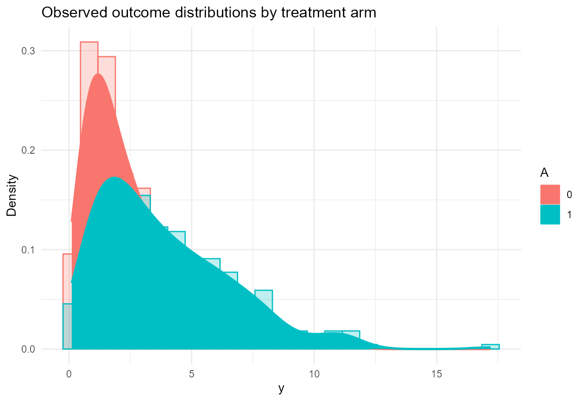

Causal Inference with CausalMixGPD
cmgpd_causal.RmdIntroduction
CausalMixGPD extends its one-arm modeling framework to
causal analyses by fitting treatment-specific outcome distributions and
then computing causal contrasts as posterior functionals of those fitted
distributions. This is a distribution-first approach: rather than
modeling only an average treatment effect, the package models the
treated and control outcome laws and derives means, quantiles,
restricted means, survival summaries, and their contrasts from the
resulting posterior object (Rubin 1974; Rosenbaum and Rubin 1983; Imbens and Rubin 2015).
The software article emphasizes that this design is particularly useful when the outcome is skewed or heavy-tailed. In those cases, mean-only summaries can miss treatment-effect heterogeneity across the outcome scale, while direct modeling of treatment-specific distributions allows quantile treatment effects and upper-tail contrasts to be reported coherently.
This vignette develops the causal workflow in four steps. We first define the potential-outcomes notation and the causal estimands returned by the package. We then describe how the spliced DPM-GPD model is used arm by arm. Next, we work through the main causal interface using a bundled simulated dataset. Finally, we summarize the main customization options for propensity score augmentation, arm-specific model choices, posterior effect summaries, and prediction.
Notation and short theory background
Potential outcomes and arm-specific distributions
Let denote a binary treatment indicator, with for treatment and for control. Let and be the potential outcomes, and let denote the pre-treatment covariates. The observed outcome is
For each treatment arm , define the arm-specific conditional CDF and density by
The package models these arm-specific conditional distributions directly. Once they are available, all reported causal estimands are computed from them.
Identification assumptions
The causal workflow follows the standard potential-outcomes framework under consistency, no interference, conditional ignorability, and overlap (Rubin 1974; Rosenbaum and Rubin 1983; Imbens and Rubin 2015). Under these assumptions,
That identification step matters because it justifies fitting arm-specific outcome models to the observed data and then interpreting posterior contrasts as causal quantities.
Propensity score augmentation
In observational settings, the package can estimate a propensity score
and append a summary of it to the outcome model covariates. If is the estimated score, the augmented predictor used by the outcome model is typically of the form
where is either the identity map on the probability scale or the logit transformation, depending on the setting. This is the package’s default strategy for incorporating design information into the arm-specific outcome regressions.
Spliced outcome model within each arm
Within each arm, CausalMixGPD uses the same spliced
model described in the one-arm workflow. For arm
,
the conditional distribution combines a DPM bulk and an optional GPD
tail:
where . The main modeling choice in the causal workflow is therefore not the contrast itself but the quality of the two fitted conditional outcome distributions.
Causal estimands reported by the package
Once the arm-specific distributions are fitted, the package returns several causal functionals.
The conditional mean in arm is
and the conditional quantile is
From these, the package constructs conditional and standardized estimands. The main ones are
and
where the superscript indicates standardization over the empirical covariate distribution in the full sample. The package also provides ATT and QTT analogues standardized over the treated covariate distribution.
These definitions explain the structure of the causal API. Functions
such as ate(), qte(), cate(), and
cqte() are not fitting new models. They are post-processing
a fitted causal object to summarize different posterior functionals.
Function map for the causal workflow
The most important exported functions in this vignette are:
-
dpmgpd.causal()for spliced arm-specific outcome modeling. -
dpmix.causal()for the bulk-only causal analogue. -
ate()andatt()for mean or restricted-mean treatment contrasts. -
qte()andqtt()for marginal quantile contrasts. -
cate()andcqte()for profile-specific conditional contrasts. -
predict()for arm-wise predictive summaries and contrast-based summaries at new covariate profiles. -
summary()andplot()for effect-object summaries and visualization.
Package setup
mcmc_vig <- list(
niter = 1200,
nburnin = 300,
thin = 2,
nchains = 2,
seed = 2026
)Data
We use the bundled causal dataset causal_pos500_p3_k2,
which contains a positive outcome y, a binary treatment
indicator A, and a predictor matrix X.
data("causal_pos500_p3_k2", package = "CausalMixGPD")
causal_dat <- data.frame(
y = causal_pos500_p3_k2$y,
A = causal_pos500_p3_k2$A,
causal_pos500_p3_k2$X
)
str(causal_dat)
#> 'data.frame': 500 obs. of 5 variables:
#> $ y : num 4.306 1.053 0.712 2.658 1.163 ...
#> $ A : int 1 1 0 0 0 1 1 1 1 0 ...
#> $ x1: num -0.00378 0.52316 0.96922 0.2559 0.52141 ...
#> $ x2: num -0.6949 -0.0319 0.5585 -0.395 -0.7697 ...
#> $ x3: num -1.588 2.201 0.719 1.774 0.365 ...
summary(causal_dat)
#> y A x1 x2
#> Min. : 0.1087 Min. :0.000 Min. :-3.32287 Min. :-0.99592
#> 1st Qu.: 1.3737 1st Qu.:0.000 1st Qu.:-0.66115 1st Qu.:-0.54574
#> Median : 2.6414 Median :1.000 Median : 0.07650 Median :-0.09628
#> Mean : 3.3667 Mean :0.618 Mean : 0.01061 Mean :-0.04422
#> 3rd Qu.: 4.7344 3rd Qu.:1.000 3rd Qu.: 0.66247 3rd Qu.: 0.46395
#> Max. :17.2006 Max. :1.000 Max. : 2.83896 Max. : 0.99651
#> x3
#> Min. :-2.98427
#> 1st Qu.:-0.65955
#> Median : 0.01209
#> Mean : 0.02806
#> 3rd Qu.: 0.68340
#> Max. : 3.62360A quick empirical comparison between the observed outcome distributions by treatment arm gives a sense of the modeling problem.
ggplot(causal_dat, aes(x = y, colour = factor(A), fill = factor(A))) +
geom_histogram(aes(y = after_stat(density)), bins = 25,
alpha = 0.25, position = "identity") +
geom_density(linewidth = 0.9) +
labs(
x = "y",
y = "Density",
colour = "A",
fill = "A",
title = "Observed outcome distributions by treatment arm"
) +
theme_minimal()
Even in a simulated benchmark, the treated and control distributions can differ in ways that are not well summarized by a single average shift. That is exactly where the distributional causal framework is useful.
Fitting a causal spliced model
The high-level causal wrapper is dpmgpd.causal(). It
fits treatment-specific outcome models and, when requested, a propensity
score stage. The software article presents this as the direct causal
extension of the one-arm workflow.
To keep vignette building stable, the numerical outputs shown below
are read from small precomputed files shipped in
inst/extdata/. The code chunks remain fully runnable and
display the same tables and graphics shipped with the package.
causal_call <- quote(
dpmgpd.causal(
formula = y ~ x1 + x2 + x3,
data = causal_dat,
treat = "A",
backend = "sb",
kernel = "gamma",
components = 5,
PS = "logit",
ps_scale = "logit",
ps_summary = "mean",
mcmc_outcome = mcmc_vig,
mcmc_ps = mcmc_vig
)
)
causal_call
#> dpmgpd.causal(formula = y ~ x1 + x2 + x3, data = causal_dat,
#> treat = "A", backend = "sb", kernel = "gamma", components = 5,
#> PS = "logit", ps_scale = "logit", ps_summary = "mean", mcmc_outcome = mcmc_vig,
#> mcmc_ps = mcmc_vig)The printed call shows the structure of the fitted model we want: arm-specific spliced outcome distributions, a gamma bulk kernel, and a logistic propensity score stage summarized on the logit scale.
Standardized causal summaries
Average treatment effect
The standardized ATE contrasts the arm-specific means after averaging over the empirical covariate distribution.
ate_tab <- read.csv(.pkg_extdata("causal_ate.csv"))
knitr::kable(ate_tab, format = "html", digits = 4)| estimand | estimate | lower | upper |
|---|---|---|---|
| ATE | -240.3653 | -222.5154 | 0.1209 |
This table is intentionally simple. In the package,
ate() returns an effect object with summary and plotting
methods. The key interpretation point is that the reported effect is
built from the arm-specific fitted distributions, not from a stand-alone
regression coefficient.
Quantile treatment effects
Quantile treatment effects are often more informative than a single average contrast in skewed or heavy-tailed settings.
qte_tab <- read.csv(.pkg_extdata("causal_qte.csv"))
knitr::kable(qte_tab, format = "html", digits = 4)| prob | estimate | lower | upper |
|---|---|---|---|
| 0.50 | -0.0447 | -1.0870 | 1.4699 |
| 0.90 | 0.0476 | -3.0921 | 3.6900 |
| 0.95 | 0.2909 | -3.8436 | 4.8933 |
plot(
qte_tab$prob,
qte_tab$estimate,
type = "b",
pch = 19,
xlab = "Quantile level",
ylab = "Estimated QTE",
ylim = range(c(qte_tab$lower, qte_tab$upper)),
main = "Quantile treatment effect curve"
)
segments(qte_tab$prob, qte_tab$lower, qte_tab$prob, qte_tab$upper, lwd = 1.2)
abline(h = 0, lty = 2, col = "grey50")The QTE display shows how the treatment effect varies with the quantile level. This is one of the main scientific motivations for fitting treatment-specific distributions directly rather than relying on mean-only summaries.
Conditional causal summaries at representative profiles
The conditional functions cate() and cqte()
evaluate treatment contrasts at user-supplied covariate profiles. A
common strategy is to build representative profiles from empirical
quartiles of the predictors.
qs <- c(0.25, 0.50, 0.75)
Xgrid <- expand.grid(lapply(causal_dat[, c("x1", "x2", "x3")], quantile, probs = qs))
head(Xgrid)
#> x1 x2 x3
#> 1 -0.66114531 -0.54573642 -0.6595519
#> 2 0.07649836 -0.54573642 -0.6595519
#> 3 0.66247098 -0.54573642 -0.6595519
#> 4 -0.66114531 -0.09628321 -0.6595519
#> 5 0.07649836 -0.09628321 -0.6595519
#> 6 0.66247098 -0.09628321 -0.6595519To illustrate the profile-specific summaries in a lightweight vignette, we reuse the package’s shipped conditional quantile summaries.
cond_q <- read.csv(.pkg_extdata("conditional_quantiles.csv"))
knitr::kable(cond_q, format = "html", digits = 4)| estimate | index | id | lower | upper |
|---|---|---|---|---|
| 1.4411 | 0.50 | 1 | 1.2335 | 1.6327 |
| 1.8302 | 0.50 | 2 | 1.2346 | 2.3465 |
| 42.4650 | 0.90 | 1 | 13.1888 | 129.6083 |
| 50.5770 | 0.90 | 2 | 14.9305 | 144.2923 |
| 134.7847 | 0.95 | 1 | 25.1334 | 478.7875 |
| 156.0091 | 0.95 | 2 | 28.9078 | 518.2162 |
The columns have the following meaning.
-
idindexes the covariate profile. -
indexis the quantile level . -
estimateis the posterior point estimate of the arm-contrast quantile summary. -
lowerandupperare the corresponding interval bounds.
In a full causal fit, cqte() would return an effect
object that can be plotted profile by profile. The important conceptual
point is that these conditional quantile contrasts are produced by
evaluating the fitted treated and control quantile functions at the same
covariate profile and differencing the results.
Predictive interpretation
The causal workflow also supports direct prediction. After fitting
the causal object, predict() can be used to obtain
arm-specific densities, survival probabilities, quantiles, means, or
restricted means at new covariate profiles. For mean and quantile-type
outputs, the treated-minus-control contrast is often the quantity of
interest; for density and survival outputs, users frequently inspect the
arm-specific predictions themselves.
The predictive logic is the same as in the one-arm case. First, the model builds arm-specific conditional distributions. Second, desired posterior functionals are evaluated from those distributions. Third, contrasts are formed draw by draw and then summarized.
Analysis summary
The causal analysis in CausalMixGPD is best understood
as a structured post-processing layer on top of two fitted conditional
outcome models. The ATE summarizes a standardized mean contrast, but the
QTE and CQTE summaries reveal whether treatment effects differ across
the outcome scale or across covariate profiles. In heavy-tailed
problems, this distinction is often substantive rather than cosmetic.
Two interventions may have similar average effects while behaving quite
differently in the upper tail.
The package’s causal interface is especially useful in that situation because the same fitted object supports several scientifically relevant views of the treatment effect. Mean, restricted-mean, quantile, and conditional contrasts all remain tied to the same posterior predictive mechanism.
Customization options for causal models
The package appendix lists the full causal customization surface; the most practically important arguments are summarized here.
Outcome-model controls
kernel, backend, GPD,
components, and param_specs can each be
supplied either as a single shared value or as arm-specific values of
length two. This allows the treated and control outcome models to differ
in kernel family, backend, truncation size, and prior structure.
dpmgpd.causal() activates the spliced tail, while
dpmix.causal() fits the bulk-only causal analogue.
Propensity score controls
PS selects the propensity score model. Common values are
"logit", "probit", "naive", and
FALSE.
ps_scale controls whether the propensity score enters
the outcome model on the probability scale or the logit scale.
ps_summary selects the posterior summary of the
propensity score appended to the outcome regressors, typically
"mean" or "median".
ps_prior, ps_clamp, and
include_intercept provide additional control over
propensity score estimation and numerical stability.
MCMC controls
The causal workflow separates iteration controls for the propensity
score stage and the outcome stage through mcmc_ps and
mcmc_outcome.
parallel_arms, workers, and related runtime
arguments can be used when the treated and control models are fitted in
parallel.
Effect and prediction controls
ate(), att(), cate(), and
related functions accept type = "mean" or
"rmean" when the target is mean-based.
qte(), qtt(), and cqte() use
the argument probs to specify the quantile levels.
Effect intervals are controlled by interval and
level, just as in the one-arm workflow.
predict() supports the same distributional output types
as the one-arm interface, now interpreted in an arm-specific or
contrast-based manner depending on the chosen output.
Session information
sessionInfo()
#> R version 4.5.2 (2025-10-31 ucrt)
#> Platform: x86_64-w64-mingw32/x64
#> Running under: Windows 11 x64 (build 26200)
#>
#> Matrix products: default
#> LAPACK version 3.12.1
#>
#> locale:
#> [1] LC_COLLATE=English_United States.utf8
#> [2] LC_CTYPE=English_United States.utf8
#> [3] LC_MONETARY=English_United States.utf8
#> [4] LC_NUMERIC=C
#> [5] LC_TIME=English_United States.utf8
#>
#> time zone: America/New_York
#> tzcode source: internal
#>
#> attached base packages:
#> [1] stats graphics grDevices datasets utils methods base
#>
#> other attached packages:
#> [1] ggplot2_4.0.2 CausalMixGPD_0.5.0 nimble_1.4.1
#>
#> loaded via a namespace (and not attached):
#> [1] gtable_0.3.6 jsonlite_2.0.0 dplyr_1.2.0
#> [4] compiler_4.5.2 renv_1.1.7 tidyselect_1.2.1
#> [7] parallel_4.5.2 jquerylib_0.1.4 systemfonts_1.3.2
#> [10] scales_1.4.0 textshaping_1.0.5 yaml_2.3.12
#> [13] fastmap_1.2.0 lattice_0.22-9 coda_0.19-4.1
#> [16] R6_2.6.1 labeling_0.4.3 generics_0.1.4
#> [19] igraph_2.2.2 knitr_1.51 htmlwidgets_1.6.4
#> [22] tibble_3.3.1 desc_1.4.3 pillar_1.11.1
#> [25] bslib_0.10.0 RColorBrewer_1.1-3 rlang_1.1.7
#> [28] cachem_1.1.0 xfun_0.57 S7_0.2.1
#> [31] fs_2.0.1 sass_0.4.10 otel_0.2.0
#> [34] cli_3.6.5 withr_3.0.2 pkgdown_2.2.0
#> [37] magrittr_2.0.4 digest_0.6.39 grid_4.5.2
#> [40] lifecycle_1.0.5 vctrs_0.7.2 evaluate_1.0.5
#> [43] pracma_2.4.6 glue_1.8.0 farver_2.1.2
#> [46] numDeriv_2016.8-1.1 ragg_1.5.0 rmarkdown_2.31
#> [49] tools_4.5.2 pkgconfig_2.0.3 htmltools_0.5.9